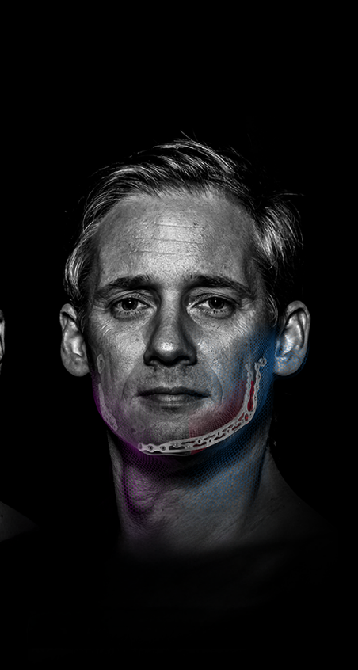
Capítulo 04
Mandible
Do côndilo à reconstrução. TriLock em ambos os lados da placa, uma espessura para cada indicação.
15
Visão geral das placas do sistema
Placas TriLock
Espessura 1,3 mm — semi-rígida*
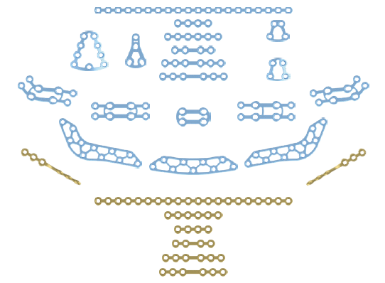
Placas de fixação
Espessura 1,0 mm — semi-rígida* (azul) e rígida (dourada)
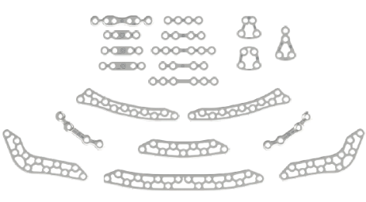
*Material semi-rígido é mais fácil de moldar do que material rígido com a mesma geometria de placa.
MODUS 2 — Mandible / Placas
16
Placas TriLock: ponte e mandíbula
Placas da ponte TriLock
Espessura 2,0 mm — semi-rígida*
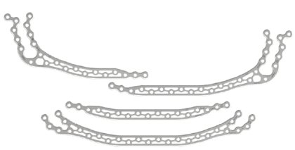
Placas de mandíbula TriLock
Espessura 1,5 mm — semi-rígida*
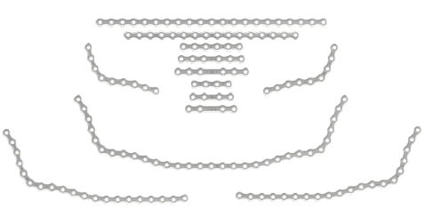
*Material semi-rígido é mais fácil de moldar do que material rígido com a mesma geometria de placa.
MODUS 2 — Mandible / Placas
17
Indicação
Fraturas condilares
Placa de côndilo TriLock
Espessura 1,3 mm — semi-rígido
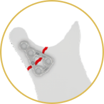
M2-4654
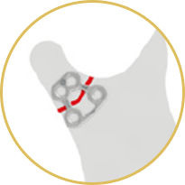
M2-4656
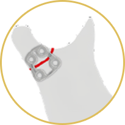
M2-4660
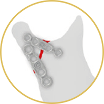
M2-4662
Placa de côndilo TriLock
Espessura 1,5 mm — semi-rígido
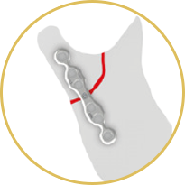
M2-4664
M2-4658M2-4692
MODUS 2 — Mandible / Fraturas condilares
18
Indicação
Fraturas condilares — placas de fixação
Placas condilares
Espessura 1,0 mm — semi-rígido
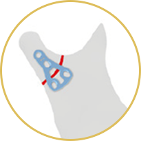
M2-4852
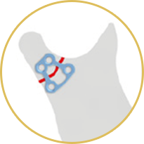
M2-4854
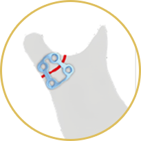
M2-4894
Placas da mandíbula, retas
Espessura 1,0 mm — rígido
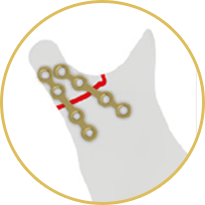
M2-4300
MODUS 2 — Mandible / Fraturas condilares
19
Indicação
Fraturas no corpo: fraturas simples
Placas de compressão de rede
Espessura 1,0 mm — semi-rígido
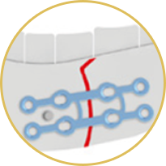
M2-4884
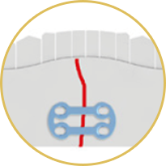
M2-4886
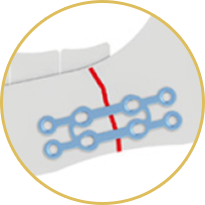
M2-4882
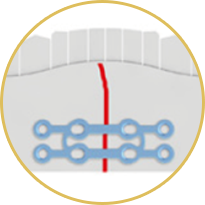
M2-4884
Placas da mandíbula, retas
Espessura 1,0 mm — rígido
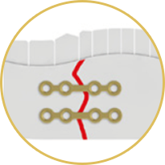
M2-4300
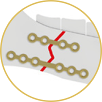
M2-4384
MODUS 2 — Mandible / Fraturas do corpo
20
Indicação
Fraturas no corpo: cominutas
Grade mediana TriLock
1,3 mm — semi-rígida
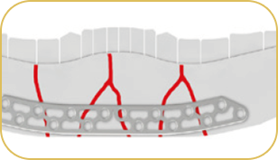
M2-4621
Grade mediana
1,0 mm — semi-rígida
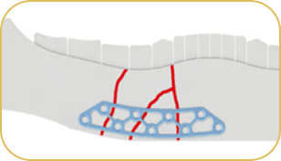
M2-4829
Placas paramedianas, grade
M2-4613
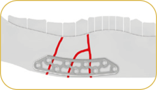
MODUS 2 — Mandible / Fraturas do corpo
21
Indicação
Fraturas cominutas — placas anatômicas
Placas TriLock, anatômicas
Espessura 1,5 mm — semi-rígido
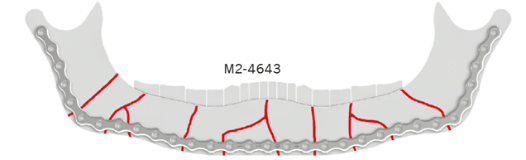
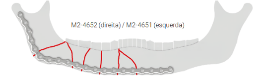
MODUS 2 — Mandible / Fraturas do corpo
22
Indicação
Fraturas de ramo e ângulo — TriLock
Placas TriLock, anatômicas
1,5 mm — semi-rígida
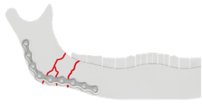
M2-4638 (direita) / M2-4637 (esquerda)
Ângulo da mandíbula TriLock, grade
1,3 mm — semi-rígida
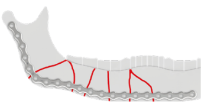
M2-4652 (direita) / M2-4651 (esquerda)
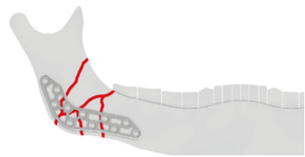
M2-4618 (direita) / M2-4617 (esquerda)
MODUS 2 — Mandible / Ramo e ângulo
23
Indicação
Fraturas de ramo e ângulo — fixação
Ângulo da mandíbula, grade
1,0 mm — semi-rígido
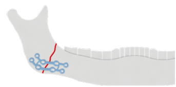
M2-4856 (direita) / M2-4843 (esquerda)
Ângulo da mandíbula, grade
1,0 mm — semi-rígido
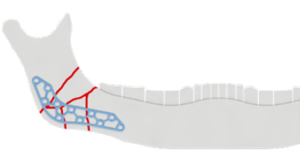
M2-4848 (direita) / M2-4847 (esquerda)
Placas da mandíbula, retas — 1,0 mm rígido
M2-4324 / M2-4384
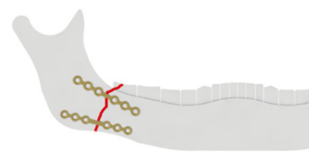
MODUS 2 — Mandible / Ramo e ângulo
24
Indicação
Fraturas atróficas da mandíbula
Placas TriLock, anatômicas
1,5 mm — semi-rígido
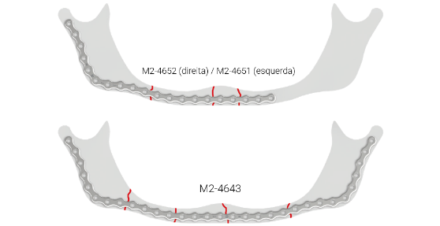
Placas TriLock Pencilbone, grade
1,3 mm — semi-rígido
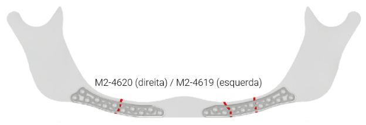
MODUS 2 — Mandible / Mandíbula atrófica
25